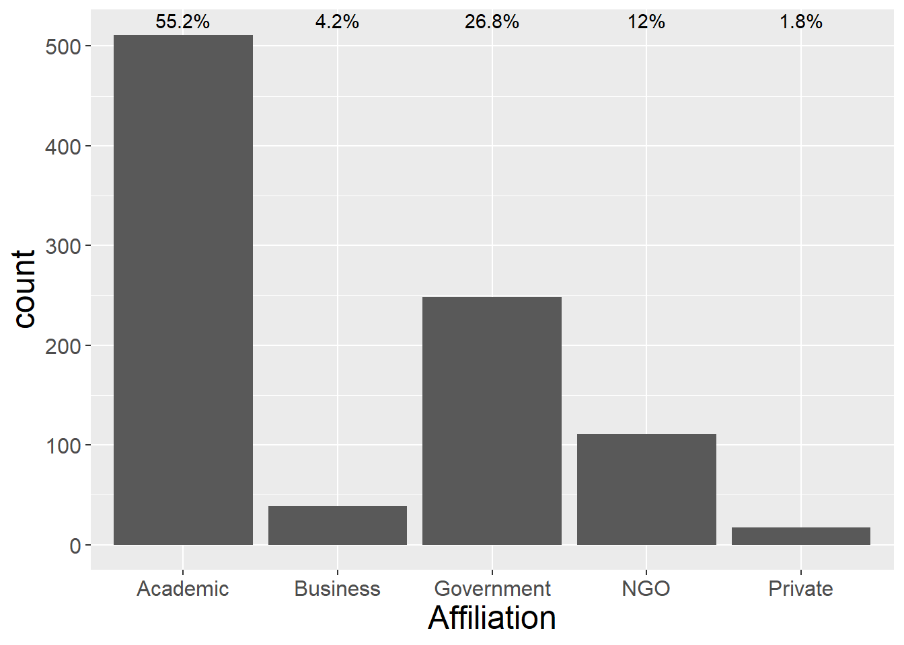
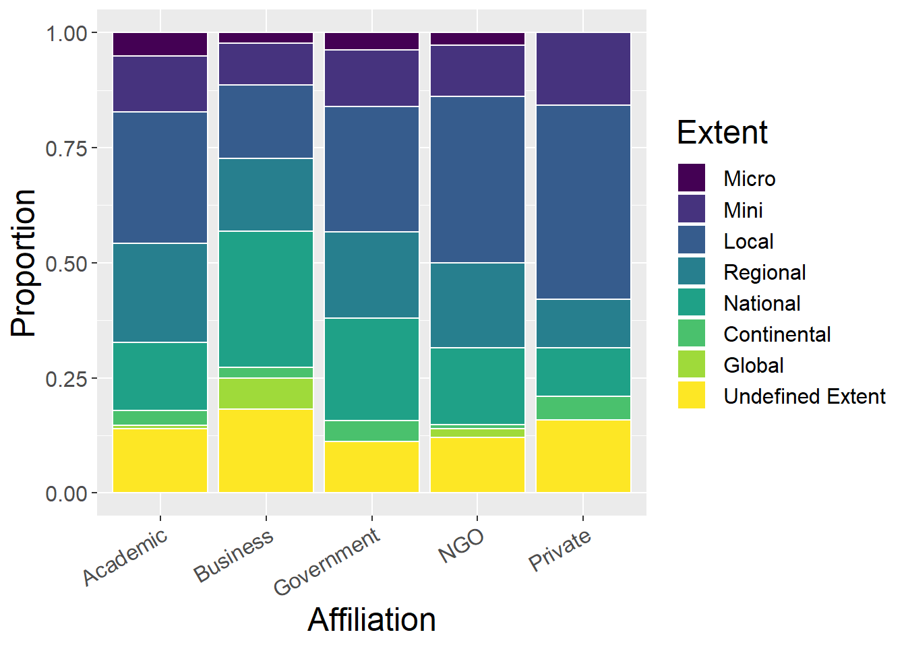
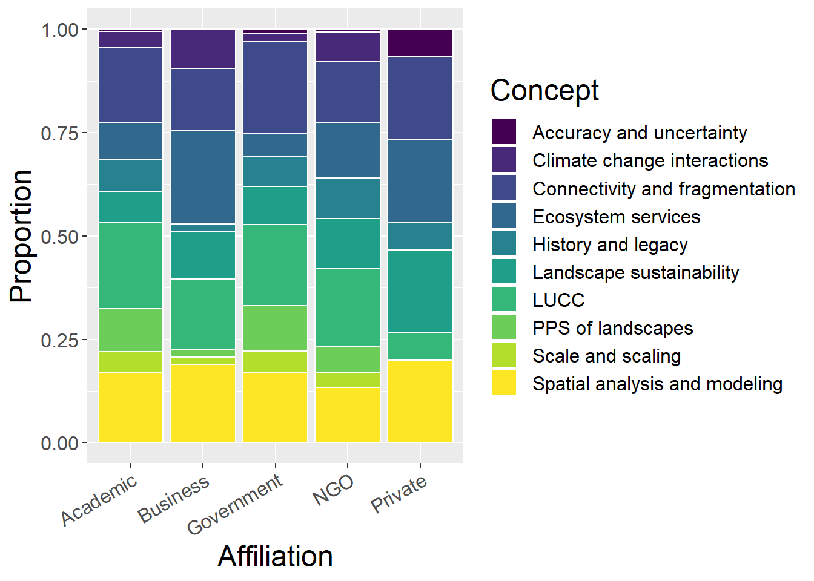
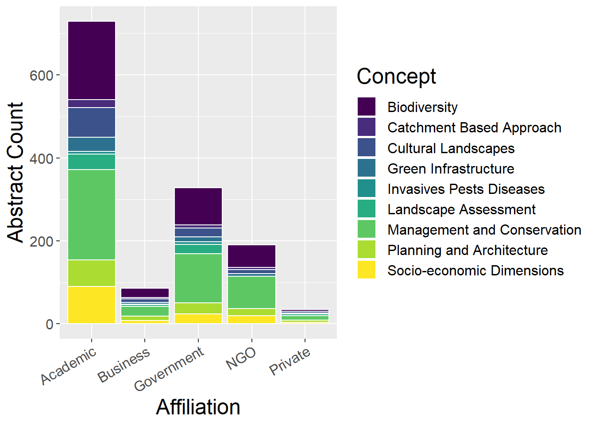

Chapter 3 Analysis by Author Affiliation
Bar charts and tables to examine how contribution to conferences have changed over time.
#spec(cpdata)
affildata <- cpdata %>%
select_if(is.numeric) %>%
gather(key = Affiliation, value = count, Academic:Private) %>%
filter(count > 0) %>%
group_by(`Affiliation`) %>%
summarise_all(sum, na.rm=T) 3.1 Total Conference Contributions
General observations:
- Academic contributors dominate, followed by Government (but as shown in previous chapter, Government contributions have decreased recently, replaced by NGOs)
affildata %>%
select(Affiliation, count) %>%
mutate(prop = count/sum(count)) %>%
mutate(prop = round(prop,3)) %>%
kable() %>%
kable_styling() %>%
scroll_box(width = "100%", height= "400px") | Affiliation | count | prop |
|---|---|---|
| Academic | 511 | 0.552 |
| Business | 39 | 0.042 |
| Government | 248 | 0.268 |
| NGO | 111 | 0.120 |
| Private | 17 | 0.018 |
ggplot(affildata, aes(x=Affiliation, y=count)) +
geom_bar(stat="identity") +
geom_text(aes(x=Affiliation, y=max(count), label = paste0(round(100*count / sum(count),1), "%"), vjust=-0.5))
3.2 Landscape Type
Stacked bar plots of contributions (by types and author affiliation)
3.2.1 Using all landscape types
General observations:
- Business not good at reporting landscape type!
- Private have greatest proportions of Seascape and Other
lspCounts <- affildata %>%
select(`Affiliation`,`Upland rural`, `Lowland rural`, Urban, Riverscape, Seascape, `Undefined LspType`,Other) %>%
mutate(Asum = rowSums(.[2:8])) %>% #calculate total for subsquent calcultation of proportion
gather(key = Type, value = count, -`Affiliation`, -Asum) %>%
mutate(prop = count / Asum) #calculate proportion
affildata %>%
select(`Affiliation`,`Upland rural`, `Lowland rural`, Urban, Riverscape, Seascape, `Undefined LspType`,Other) %>%
mutate(sum = rowSums(.[2:8])) %>% #calculate total
mutate_if(is.numeric, funs(prop = ./ sum))%>%
kable() %>%
kable_styling() %>%
scroll_box(width = "100%", height= "400px") | Affiliation | Upland rural | Lowland rural | Urban | Riverscape | Seascape | Undefined LspType | Other | sum | Upland rural_prop | Lowland rural_prop | Urban_prop | Riverscape_prop | Seascape_prop | Undefined LspType_prop | Other_prop | sum_prop |
|---|---|---|---|---|---|---|---|---|---|---|---|---|---|---|---|---|
| Academic | 58 | 242 | 58 | 70 | 36 | 84 | 14 | 562 | 0.1032028 | 0.4306050 | 0.1032028 | 0.1245552 | 0.0640569 | 0.1494662 | 0.0249110 | 1 |
| Business | 5 | 8 | 5 | 4 | 6 | 12 | 1 | 41 | 0.1219512 | 0.1951220 | 0.1219512 | 0.0975610 | 0.1463415 | 0.2926829 | 0.0243902 | 1 |
| Government | 58 | 124 | 13 | 16 | 15 | 44 | 13 | 283 | 0.2049470 | 0.4381625 | 0.0459364 | 0.0565371 | 0.0530035 | 0.1554770 | 0.0459364 | 1 |
| NGO | 13 | 47 | 14 | 18 | 13 | 10 | 1 | 116 | 0.1120690 | 0.4051724 | 0.1206897 | 0.1551724 | 0.1120690 | 0.0862069 | 0.0086207 | 1 |
| Private | 1 | 8 | 2 | 1 | 4 | 3 | 1 | 20 | 0.0500000 | 0.4000000 | 0.1000000 | 0.0500000 | 0.2000000 | 0.1500000 | 0.0500000 | 1 |
ggplot(lspCounts, aes(x=`Affiliation`, y=count, fill=Type)) + geom_bar(stat="identity", colour="white") +
scale_fill_viridis(discrete = TRUE) +
theme(axis.text.x = element_text(angle = 30, hjust = 1)) +
labs(fill="Affiliation", y = "Abstract Count")
ggplot(lspCounts, aes(x=`Affiliation`, y=prop, fill=Type)) +
geom_bar(stat="identity", colour="white") +
scale_fill_viridis(discrete = TRUE) +
theme(axis.text.x = element_text(angle = 30, hjust = 1)) +
labs(fill="Affiliation", y = "Proportion")
3.2.2 Without ‘Undefined LspType’ and ‘Other’ landscape types
General observations:
- Government has greatest proportion of Upland Rural
- Business has greatest Urban proportion and smallest Lowland Rural proportion
- Academic dominates total number of all landscape types (with possible exception of Upland Rural)
lspCounts <- affildata %>%
select(`Affiliation`,`Upland rural`, `Lowland rural`, Urban, Riverscape, Seascape) %>%
mutate(Asum = rowSums(.[2:6])) %>% #calculate total for subsquent calcultation of proportion
gather(key = Type, value = count, -`Affiliation`, -Asum) %>%
mutate(prop = count / Asum) #calculate proportion
ggplot(lspCounts, aes(x=`Affiliation`, y=count, fill=Type)) + geom_bar(stat="identity", colour="white") +
scale_fill_viridis(discrete = TRUE) +
theme(axis.text.x = element_text(angle = 30, hjust = 1)) +
labs(y = "Abstract Count")
ggplot(lspCounts, aes(x=`Affiliation`, y=prop, fill=Type)) + geom_bar(stat="identity", colour="white") +
scale_fill_viridis(discrete = TRUE) +
theme(axis.text.x = element_text(angle = 30, hjust = 1)) +
labs(y = "Proportion")
3.3 Organism
General observations:
- Academic seem to be majority by absolute number for all species
- Business and Private have greatest proportions of Generic Habitat
- NGOs have greatest proportion of Birds (RSPB?)
speciesCounts <- affildata %>%
select(`Affiliation`,Mammals, Humans, Birds, Reptiles, Inverts, Plants, Amphibians, Fish, `Generic Habitat`,`Woodland Forests`) %>%
mutate(Asum = rowSums(.[2:11])) %>% #calculate total for subsquent calcultation of proportion
gather(key = Type, value = count, -`Affiliation`, -Asum) %>%
mutate(prop = count / Asum) #calculate proportion
ggplot(speciesCounts, aes(x=`Affiliation`, y=count, fill=Type)) + geom_bar(stat="identity", colour="white") +
scale_fill_viridis(discrete = TRUE) +
theme(axis.text.x = element_text(angle = 30, hjust = 1)) +
labs(fill="Organism", y = "Abstract Count")ggplot(speciesCounts, aes(x=`Affiliation`, y=prop, fill=Type)) + geom_bar(stat="identity", colour="white") +
scale_fill_viridis(discrete = TRUE) +
theme(axis.text.x = element_text(angle = 30, hjust = 1)) +
labs(fill="Organism", y = "Proportion")
3.4 Methods
General observations:
- Academic seem to be majority by absolute number for all methods
- Business obviously lower proportion of empirical studies (expensive?), substituted by GIS and qualitative
- Government has smallest proportion of qualitative
- Private has greatest proprtion of theoretical, no RS and relatively little GIS (technical training?)
methodsCounts <- affildata %>%
select(`Affiliation`,Empirical, Theoretical, Qualitative, Quantitative, GIS, `Remote sensing`) %>%
mutate(Asum = rowSums(.[2:7])) %>% #calculate total for subsquent calcultation of proportion
gather(key = Type, value = count, -`Affiliation`, -Asum) %>%
mutate(prop = count / Asum) #calculate proportion
ggplot(methodsCounts, aes(x=`Affiliation`, y=count, fill=Type)) + geom_bar(stat="identity", colour="white") +
scale_fill_viridis(discrete = TRUE) +
theme(axis.text.x = element_text(angle = 30, hjust = 1)) +
labs(fill="Method", y = "Abstract Count")
ggplot(methodsCounts, aes(x=`Affiliation`, y=prop, fill=Type)) + geom_bar(stat="identity", colour="white") +
scale_fill_viridis(discrete = TRUE) +
theme(axis.text.x = element_text(angle = 30, hjust = 1)) +
labs(fill="Method", y = "Proportion")
3.5 Spatial Extent
General observations:
- Academic seem to be majority by absolute number for all extents
- Business have largest proportion of Global and National studies, with smallest proprtion of Local studies
- Private has larest proportion of Local and Mini studies (cost-related and given no RS and few GIS studies?)
- Academic: decreasing proportion Local -> Regional -> National -> Global
- Government: greater proportion of National than Regional
spatialCounts <- affildata %>%
select(`Affiliation`,Micro, Mini, Local, Regional, National, Continental, Global,`Undefined Extent`) %>%
mutate(Asum = rowSums(.[2:9])) %>% #calculate total for subsquent calcultation of proportion
gather(key = Type, value = count, -`Affiliation`, -Asum) %>%
mutate(prop = count / Asum) #calculate proportion
factor_order <- c('Micro', 'Mini', 'Local', 'Regional', 'National', 'Continental', 'Global','Undefined Extent')
factor_labels <- c('Micro', 'Mini', 'Local', 'Regional', 'National', 'Continental', 'Global','Undefined')
ggplot(spatialCounts, aes(x=`Affiliation`, y=count, fill=factor(Type, level=factor_order))) + geom_bar(stat="identity", colour="white") +
scale_fill_viridis(discrete = TRUE) +
theme(axis.text.x = element_text(angle = 30, hjust = 1)) +
labs(fill="Extent", y = "Abstract Count")
ggplot(spatialCounts, aes(x=`Affiliation`, y=prop, fill=factor(Type, level=factor_order))) + geom_bar(stat="identity", colour="white") +
scale_fill_viridis(discrete = TRUE) +
theme(axis.text.x = element_text(angle = 30, hjust = 1)) +
labs(fill="Extent", y = "Proportion")
3.6 Temporal Extent
General observations:
- Vast majority of all affiliations did not list temporal extent of the study
- Academic seem to be majority by absolute number for all methods
temporalCounts <- affildata %>%
select(`Affiliation`,Hours, Days, Weeks, Months, Years, Decades, Centuries, Longer, `Undefined Temporal`) %>%
mutate(Asum = rowSums(.[2:10])) %>% #calculate total for subsquent calcultation of proportion
gather(key = Type, value = count, -`Affiliation`, -Asum) %>%
mutate(prop = count / Asum) #calculate proportion
tfactor_order <- c('Hours', 'Days', 'Weeks', 'Months', 'Years', 'Decades', 'Centuries', 'Longer', 'Undefined Temporal')
tfactor_labels <- c('Hours', 'Days', 'Weeks', 'Months', 'Years', 'Decades', 'Centuries', 'Longer', 'Undefined')
ggplot(temporalCounts, aes(x=`Affiliation`, y=count, fill=factor(Type, level=tfactor_order))) + geom_bar(stat="identity", colour="white") +
scale_fill_viridis(discrete = TRUE) +
theme(axis.text.x = element_text(angle = 30, hjust = 1)) +
labs(fill="Extent", y = "Abstract Count")
ggplot(temporalCounts, aes(x=`Affiliation`, y=prop, fill=factor(Type, level=tfactor_order))) + geom_bar(stat="identity", colour="white") +
scale_fill_viridis(discrete = TRUE) +
theme(axis.text.x = element_text(angle = 30, hjust = 1)) +
labs(fill="Extent", y = "Proportion")
3.7 Concepts
General observations:
- Academic seem to be majority by absolute number for all extents
- Business have greatest proportions of climate change and ecosystem services, less interested in history and legacy
- All other affiliations reasonably similar in terms of proportions
conceptCounts <- affildata %>%
select(`Affiliation`,`PPS of landscapes`,
`Connectivity and fragmentation`, `Scale and scaling`,`Spatial analysis and modeling`,LUCC,`History and legacy`,`Climate change interactions`,`Ecosystem services`,`Landscape sustainability`,`Accuracy and uncertainty`) %>%
mutate(Asum = rowSums(.[2:11])) %>% #calculate total for subsquent calcultation of proportion
gather(key = Type, value = count, -`Affiliation`, -Asum) %>%
mutate(prop = count / Asum) #calculate proportion
ggplot(conceptCounts, aes(x=`Affiliation`, y=count, fill=Type)) + geom_bar(stat="identity", colour="white") +
scale_fill_viridis(discrete = TRUE) +
theme(axis.text.x = element_text(angle = 30, hjust = 1)) +
labs(fill="Concept", y = "Abstract Count")ggplot(conceptCounts, aes(x=`Affiliation`, y=prop, fill=Type)) + geom_bar(stat="identity", colour="white") +
scale_fill_viridis(discrete = TRUE) +
theme(axis.text.x = element_text(angle = 30, hjust = 1)) +
labs(fill="Concept", y = "Proportion")
3.8 Other Concepts
General observations:
- Academic seem to be majority by absolute number for all extents
- Government and NGOs have greater proportion of Management and Conservation than Academic
- Private low on biodiversity but higher on cultural landscapes, landscape assessment and planning
otherCounts <- affildata %>%
select(`Affiliation`,`Green Infrastructure`,`Planning and Architecture`,`Management and Conservation`,`Cultural Landscapes`,`Socio-economic Dimensions`,Biodiversity,`Landscape Assessment`,`Catchment Based Approach`,`Invasives Pests Diseases`) %>%
mutate(Asum = rowSums(.[2:10])) %>% #calculate total for subsquent calcultation of proportion
gather(key = Type, value = count, -`Affiliation`, -Asum) %>%
mutate(prop = count / Asum) #calculate proportion
ggplot(otherCounts, aes(x=`Affiliation`, y=count, fill=Type)) + geom_bar(stat="identity", colour="white") +
scale_fill_viridis(discrete = TRUE) +
theme(axis.text.x = element_text(angle = 30, hjust = 1)) +
labs(fill="Concept", y = "Abstract Count")
ggplot(otherCounts, aes(x=`Affiliation`, y=prop, fill=Type)) + geom_bar(stat="identity", colour="white") +
scale_fill_viridis(discrete = TRUE) +
theme(axis.text.x = element_text(angle = 30, hjust = 1)) +
labs(fill="Concept", y = "Proportion")